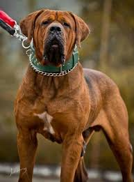
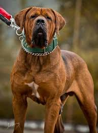

Cainii de talie mare sunt caini care depasesc inaltimea de 60 de cm la nivelul greabanului si au o greutate mai mare de 30 de kg. Aceste rase de caini sunt adesea considerate puternice si impresionante datorita dimensiunilor lor mari. In general, cainii de talie mare sunt impartiti in doua categorii: caini de lucru si caini de companie. Cainii de talie mare de lucru sunt adesea folositi in activitati precum paza, vanatoare, salvare, politie si armata. Aceste rase de caini sunt in general inteligente, loiale si au o forta fizica impresionanta. Printre cele mai populare rase de caini de talie mare de lucru se numara Doberman, Rottweiler, Saint Bernard, Dog Argentinian si German Shepherd. Cainii de talie mare de companie sunt adesea crescuti pentru companie si protectie. Aceste rase de caini sunt de obicei mai prietenoase si mai afectuoase decat cainii de lucru. Printre cele mai populare rase de caini de talie mare de companie se numara Labrador Retriever, Golden Retriever, Great Dane, Mastiff si Bernese Mountain Dog. Indiferent de tipul de caine de talie mare, este important sa se acorde o atentie deosebita la antrenamentul si socializarea lor timpurie, deoarece dimensiunile lor pot face acesti caini mai dificil de controlat si de gestionat in situatii sociale. De asemenea, este important sa li se ofere suficienta activitate fizica pentru a mentine starea lor de sanatate si fericire.

 
